전자기기기능장 (2015-07-19 기출문제)
1과목: 임의구분
1. 지향성이 좋고, 넓은 각도에서 고음이 잘 재생되는 스피커 인클로저의 종류는?
- 밀폐형
- 위상 반전형
- 백로드 혼형
- 컬럼 스피커
(정답률: 69%)

2. HDTV에 대한 설명으로 틀린 것은?
- 화면비는 16:9 이다.
- 음성다중은 5.1 채널이다.
- 변조방식은 VSB이다.
- 다양한 부가서비스를 제공할 수 있다.
(정답률: 82%)
3. A+AㆍB 논리식을 간력화한 것은?
- A+B
- A
- B
- AㆍB
(정답률: 79%)
4. 7490은 2×5진 비동기 카운터 IC일 때, 출력 주파수 fo가 입력주파수 f의 몇 분의 1로 나타나는가?
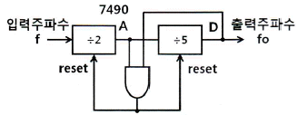
- 1/2
- 1/5
- 1/9
- 1/10
(정답률: 58%)
5. 그림과 같은 회로에서 콘덴서 C2의 역할은? (단, C2＜＜ C1 이다.)
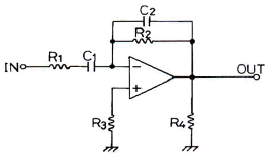
- 고주파에서의 이득제한
- 저주파에서의 이득제한
- 고주파에서의 위상보상
- 저주파에서의 위상보상
(정답률: 68%)
6. 전류와 자장의 세기와의 관계를 나타내는 법칙은?
- 옴(Ohm)의 법칙
- 렌츠(Lenz)의 법칙
- 키르히호프(Kirchhoff)의 법칙
- 비오사바르(Biot-Savart)의 법칙
(정답률: 77%)
7. 16진 비동기 카운터를 만들려면 JK 플립플롭이 최소 몇 개가 필요한가?
- 2
- 3
- 4
- 6
(정답률: 84%)
8. 스피커 설치와 전송 주파수 특성에 관한 설명으로 틀린 것은?
- 스피커 설치 시 청취자가 여러 명인 경우 즉, 청취영역이 넓어야 할 경우에는 스피커의 위치를 어느 정도 높게 하여야 한다.
- 양호한 청취 영역을 확보하기 위해서는 스피커의 지향 특성이 중요하다.
- 국제기준으로서 ITU-R에서 오디오 시스템을 주관 평가할 때 청취실의 전송 주파수 특성 범위를 권고한다.
- 일반적으로 스테레오 재생에서 스피커 간격을 스피커의 음향 중심으로부터 측정하여 1m, 청취점은 스피커의 겉보기 각도 45도 위치에서 청취하는 경우가 많다.
(정답률: 77%)
9. 여러 레지스터들 간의 데이터 전송을 위한 Bus 구조에 관한 설명 중 옳지 않은 것은?
- 레지스터의 출력이 tri-STATE이면 Multiplexer가 없어도 된다.
- 한 DATA 전송을 위해서는 최소한 두 clock pulse가 필요하다.
- 둘 이상의 DATA를 동시에 전송하려면 Bus도 둘 이상이 필요하다.
- Multiplexer와 Decoder가 필요하다.
(정답률: 72%)
10. 비동기식(asynchronous) 직렬(serial) 입ㆍ출력 인터페이스를 바르게 설명한 것은?
- 단위 데이터를 동일 시점에서 전송하는 방식이다.
- 변복조 장치(MODEM)를 사용한 장거리 데이터 전송은 불가능하다.
- 단위 데이터의 전후에 스타트(start) 신호와 스톱(stop) 신호가 필요하다.
- 고속 데이터 전송이 필요한 입ㆍ출력 장치의 인터페이스에 적합하다.
(정답률: 69%)
11. 4단자 회로망에서 h 파라미터의 정의로 틀린 것은?
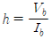
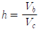
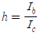
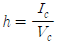
(정답률: 69%)
12. 영상신호의 포맷 중 화질이 우수한 순서대로 나열된 것은?
- DVI - Component - S-Video - Composite
- Component - S-Video - DVI - Composite
- S-Video - DVI - Composite - Component
- S-Video - Component - Composite - DVI
(정답률: 79%)
13. CAD에서 PCB를 제작하기 위해 DRC 이후, 제조용 데이터를 출력하기 위한 것은?
- Netlist
- Partlist
- Copper Pour
- Gerber 파일
(정답률: 83%)
14. -80[dB]의 감도를 가진 마이크로폰에 1[μbar]의 음압을 가했을 때 출력전압은?
- 0.01[mV]
- 0.1[mV]
- 1[mV]
- 10[mV]
(정답률: 54%)
15. 다음 회로의 출력전압 e0는?
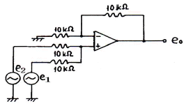
- -(e1+e2)
- e1-e2
- e2-e1
- e1+e2
(정답률: 65%)
16. 2분간에 876000[J]의 일을 하였을 때, 전력은 몇 [kW]인가?
- 7.3
- 6.3
- 5.3
- 4.3
(정답률: 63%)
17. 다음의 파형이 오실로스코프에 측정되었을 때 위상차는?
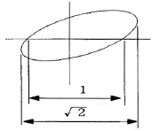
- 30°
- 45°
- 60°
- 90°
(정답률: 84%)
18. 이상적인 정전류 전원의 V-I 특성곡선은?
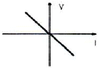
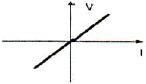
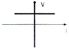
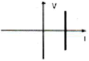
(정답률: 79%)
19. 고주파 유도가열에 이용되는 것은?
- 히스테리시스 손
- 와전류 손
- 유전체 손
- 줄열 손
(정답률: 85%)
20. 다음 중 RC 결합 증폭기의 고역주파수 특성은?
- 결합콘덴서 CC의 리액턴스가 0이 되어 무시된다.
- 이미터 콘덴서 CE에 의해 부궤환이 걸린다.
- 베이스와 컬렉터간의 전극용량 CCB는 출력 임피던스를 증가시킨다.
- 컬렉터와 이미터간 전극용량 CCE는 출력 임피던스를 증가시킨다.
(정답률: 55%)
2과목: 임의구분
21. 다음 중 Interrupt와 DMA(Direct Memory Access)에 대한 설명 중 틀린 것은?
- 프로그램 수행 중에 정전이 될 경우 특정한 컴퓨터 내부의 상태나 프로그램의 상태 보존을 위해 인터럽트가 사용된다.
- DMA는 플로피디스크와 메모리 사이에서의 데이터 전달과 같이 다량의 데이터를 고속으로 전달할 때 효과적이다.
- CPU가 인터럽트 요구 발생을 알면 인터럽트 확인신호를 주변장치에 내보내고 현재의 PC를 상태 레지스터에 저장한다.
- DMA는 메모리와 입출력 장치 사이에 DMA Controller가 필요하다.
(정답률: 54%)
22. CD(Compact Disc)의 특징이 아닌 것은?
- S/N비가 90[dB] 이상이다.
- 다이나믹 레인지가 90[dB] 이상이다.
- 와우 플러터는 무시할 정도로 적다.
- 아주 작은 흠이나 먼지에 의해 잡음이 증가한다.
(정답률: 80%)
23. 다음 회로에서 임피던스 값은 몇 [Ω]인가?
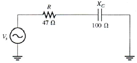
- 47[Ω]
- 73[Ω]
- 100[Ω]
- 110[Ω]
(정답률: 57%)
24. 버랙터(varactor) 다이오드에 대한 설명으로 옳은 것은?
- 가변 저항 역할을 한다.
- 가변 용량 역할을 한다.
- 가변 인덕턴스 역할을 한다.
- 가변 컨덕턴스 역학을 한다.
(정답률: 84%)
25. 전달함수 G1, G2, H를 갖고 있는 요소를 그림과 같이 접속하였을 때 등가 전달함수 Y/X는?
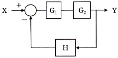
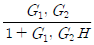
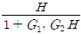
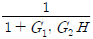
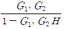
(정답률: 58%)
26. FM 라디오 수신기에서 진폭 제한기는 어디에 설치하는가?
- 주파수 혼합기와 중간주파 증폭기 중간
- 중간주파 증폭기와 주파수 변별기 중간
- 주파수 변별기와 디엠퍼시스 회로 중간
- 디엠퍼시스 회로와 저주파 증폭기 중간
(정답률: 77%)
27. 가청 증폭기에 부귀환을 걸어 주었을 때에 일어나는 현상이 아닌 것은?
- 주파수 특성이 개선된다.
- 증폭기의 이득이 증가한다.
- 비직선 일그러짐이 감소된다.
- 증폭기 전체의 동작이 안정된다.
(정답률: 76%)
28. 다음 중 마이크로프로세서 개발 장비용 툴(Tool)과 관계가 먼 것은?
- ICE(In-Circuit Emulator)
- ROM Writer
- Spectrum Analyzer
- Digitizer
(정답률: 79%)
29. 정현파 교류 전압의 주기가 0.2[s]이면 주파수는 몇 [Hz]인가?
- 2
- 5
- 10
- 20
(정답률: 72%)
30. 내부 저항 r[Ω]이고, 기전력이 E[V]인 건전지의 등가회로는?
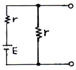
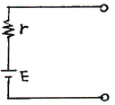
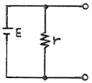
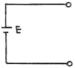
(정답률: 80%)
31. 3-8 line 디코더에서 입력측 데이터가 D0=0, D1=1, D2=1인 경우 선택된 출력단자와 출력전압은 아래의 보기 중 어느 것인가? (단, 논리 ″1″=5[V], 논리 ″0″은 0[V]이고, 입력측 데이터에서 LSB는 D0이다.)
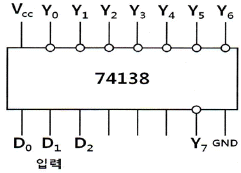
- Y3, 5[V]
- Y3, 0[V]
- Y6, 5[V]
- Y6, 0[V]
(정답률: 60%)
32. 윈(WIEN)브리지 발진기에서 발진주파수 f는 [Hz]인가? (단, R=47[kΩ], C=100[pF]이다.)
- 52.5[kHz]
- 42.5[kHz]
- 33.9[kHz]
- 23.9[kHz]
(정답률: 55%)
33. 다음 중 러시아의 바소프 등에 의해 발견된 의료용 레이저로서, 파장이 제일 짧고 고출력의 레이저는?
- CO2 레이저
- 엑시머 레이저
- YAG 레이저
- Ar 레이저
(정답률: 86%)
34. CDP(컴팩트 디스크플레이어)에서는 아날로그 신호를 디지털 신호로 변환하기 위해 PCM 방식을 적용하는데 아날로그 신호를 디지털 신호로 변환하는 PCM의 과정을 순서대로 나열한 것은?
- 저역필터→양자화→표본화→부호화
- 저역필터→표본화→양자화→부호화
- 표본화→부호화→양자화→저역필터
- 표본화→저역필터→부호화→양자화
(정답률: 79%)
35. 그림과 같은 RC형 톤 컨트롤 회로에서 중역(1000Hz)의 이득을 대략 표시한 것 중 옳은 것은?
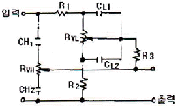
- R2/R1
- R1/R2
- R3/R2
- R3/R1
(정답률: 70%)
36. 10진수 22를 2진수로 표시한 것은?
- 11100(2)
- 10010(2)
- 10110(2)
- 10100(2)
(정답률: 79%)
37. 다음의 라우팅 프로토콜 중에서 아래의 설명에 적합한 것은?
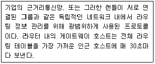
- BGP(Border Gateway Protocol)
- OSPF(Open Shortest Path First)
- IGP(Interior Gateway Protocol)
- RIP(Routing Information Protocol)
(정답률: 75%)
38. 전압 변동률을 나타내는 식은? (단, V0 : 부하 시 출력단자의 전압, V : 무부하 시 출력단자의 전압)
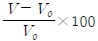
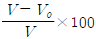
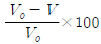
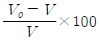
(정답률: 64%)
39. 다음 중 재생용 EQ(Equalizer) 회로의 특성으로 옳은 것은?
- 저역과 중역의 이득을 올린다.
- 중영과 고역의 이득을 올린다.
- 저역의 이득을 낮추고, 고역의 이득을 올린다.
- 저역의 이득을 올리고, 고역의 이들을 낮춘다.
(정답률: 81%)
40. 그림과 같은 회로에서 저항 R2에 흐르는 전류 I2는?
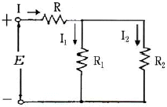
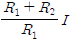
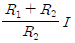
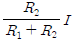
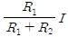
(정답률: 72%)
3과목: 임의구분
41. 위상왜곡(Phase distortion)의 설명으로 틀린 것은?
- 고조파의 위상이 기본고조파에 대하여 이동할 경우에 발생된다.
- 기본고조파가 피크절대 값으로 될 경우의 위상과 일치하지 않으면 발생된다.
- 주파수 왜곡과 위상 왜곡은 거의 항상 같이 발생한다.
- 입력 스펙트럼 성분이 증폭기의 대역폭 내에서 존재할 때 발생한다.
(정답률: 40%)
42. 단일 정현파 신호로 FM파와 PM파의 차이를 비교할 때, 그림의 순서로 알맞은 것은?
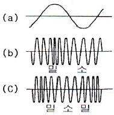
- ⒜ 신호파, ⒝ FM파, ⒞ PM파
- ⒜ 신호파, ⒝ PM파, ⒞ FM파
- ⒜ 정현파, ⒝ PM파, ⒞ PM파
- ⒜ 정현파, ⒝ FM파, ⒞ FM파
(정답률: 64%)
43. 3-cycle 인스트럭션에 속하지 않는 것은?
- ADD
- LOAD
- STORE
- JUMP
(정답률: 81%)
44. 아래의 그림과 같은 RC 적분회로의 입력에 펄스폭이 tw인 구형파를 인가했을 때 회로의 시정수(τ=RC)가 τ≫tw의 조건이 되면 출력파형은 아래의 보기 중 어떤 모양인가?
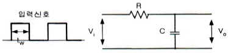
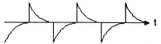
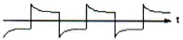
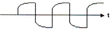
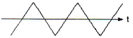
(정답률: 81%)
45. 다음 중 온도변화를 저항의 변화로 검출시키는 것은?
- 스프링
- 전자코일
- 니켈선
- 가변저항기
(정답률: 72%)
46. 4비트 병렬가산기를 4비트 병렬감산기로 변환하기 위한 조건이 아닌 것은?
- 1의 자리 HA를 FA로 바꾼다.
- 1의 자리 FA를 HA로 바꾼다.
- B의 입력에 4개의 인버터를 추가한다.
- 8자리 FA의 Co에서 1자리 FA의 Cin에 순환자리 올림 선을 접속한다.
(정답률: 65%)
47. 주파수가 54[MHz]인 반송파를 3[kHz]의 신호파로 FM 변조했을 때 최대주파수편이가 ±15[kHz]이면 점유주파수 대역폭은?
- 6[kHz]
- 30[kHz]
- 36[kHz]
- 72[kHz]
(정답률: 76%)
48. 연산장치로 논리연산을 할 때 필요없는 부분을 지울 때 쓰며, 일명 ″mask 한다″라고 하는 논리 게이트는?
- AND
- OR
- EX-OR
- NAND
(정답률: 77%)
49. CPU가 기억장치에서 명령을 가져와서 실행하는 사이클은?
- Read 사이클
- Fetch 사이클
- Write 사이클
- Execute 사이클
(정답률: 66%)
50. 그림과 같은 회로를 논리 기호로 표시하면?
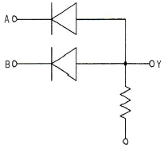
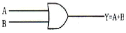
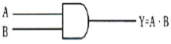
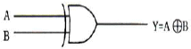
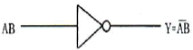
(정답률: 68%)
51. 디지털 데이터를 디지털 신호로 변환하는 전송부호(부호화)의 종류에 속하지 않는 것은?
- NRZ
- CMI
- ADM
- 맨체스터
(정답률: 61%)
52. R-L-C 공진 회로에 대한 설명으로 옳은 것은?
- 병렬 공진 시에 최대의 전류가 흐른다.
- 직렬 공진 시 전압확대비
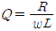
이다. - 직렬 공진 시 임피던스는 최소가 된다.
- 직렬 공진 시 전류는 전압보다 위상이 늦다.
(정답률: 72%)
53. 다음 블록(Block) 선도에서 전달함수를 구하면?
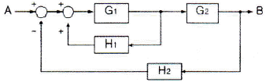
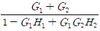
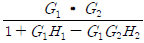
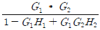
(정답률: 57%)
54. Gunn Diode의 부성 저항 특성을 이용하기에 가장 적당한 것은?
- 마이크로파 검파기
- 마이크로파 혼합기
- 마이크로파 증폭기
- 마이크로파 발진기
(정답률: 64%)
55. 도수분포표에서 알 수 있는 정보로 가장 거리가 먼 것은?
- 로트 분포의 모양
- 100 단위당 부적합 수
- 로트의 평균 및 표준편차
- 규격과의 비교를 통한 부적합품률의 추정
(정답률: 62%)
56. 미리 정해진 일정단위 중에 포함된 부적합수에 의거하여 공정을 관리할 때 사용되는 관리도는?
- c 관리도
- P 관리도
- X 관리도
- nP 관리도
(정답률: 68%)
57. TPM 활동 체제 구축을 위한 5가지 기둥과 가장 거리가 먼 것은?
- 설비초기관리체제 구축 활동
- 설비효율화의 개별개선 활동
- 운전과 보전의 스킬 업 훈련 활동
- 설비경제성 검토를 위한 설비투자분석 활동
(정답률: 63%)
58. 로트에서 랜덤하게 시료를 추출하여 검사한 후 그 결과에 따라 로트의 합격, 불합격을 판정하는 검사방법을 무엇이라 하는가?
- 자주검사
- 간접검사
- 전수검사
- 샘플링검사
(정답률: 85%)
59. ASME(American Society of Mechanical Engineers)에서 정의하고 있는 제품공정 분석표에 사용되는 기호 중 ″저장(Storage)″을 표현한 것은?
- ○
- □
- ▽
- ⇨
(정답률: 79%)
60. 자전거를 셀 방식으로 생산하는 공장에서, 자전거 1대당 소요공수가 14.5H이며, 1일 8H, 월 25일 작업을 한다면 작업자 1명당 월 생산 가능 대수는 몇 대인가? (단, 작업자의 생산종합효율은 80%이다.)
- 10대
- 11대
- 13대
- 14대
(정답률: 70%)